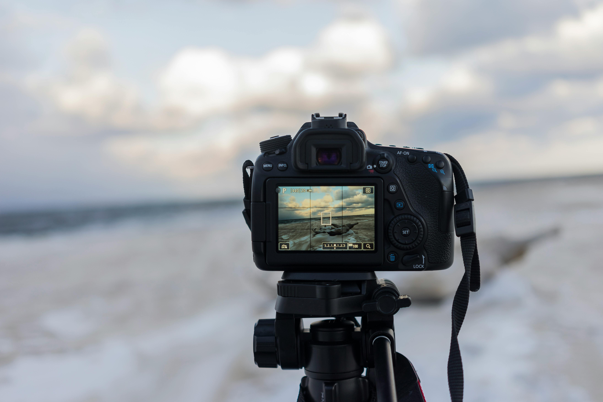
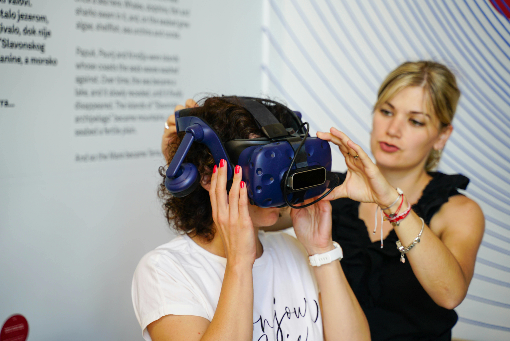
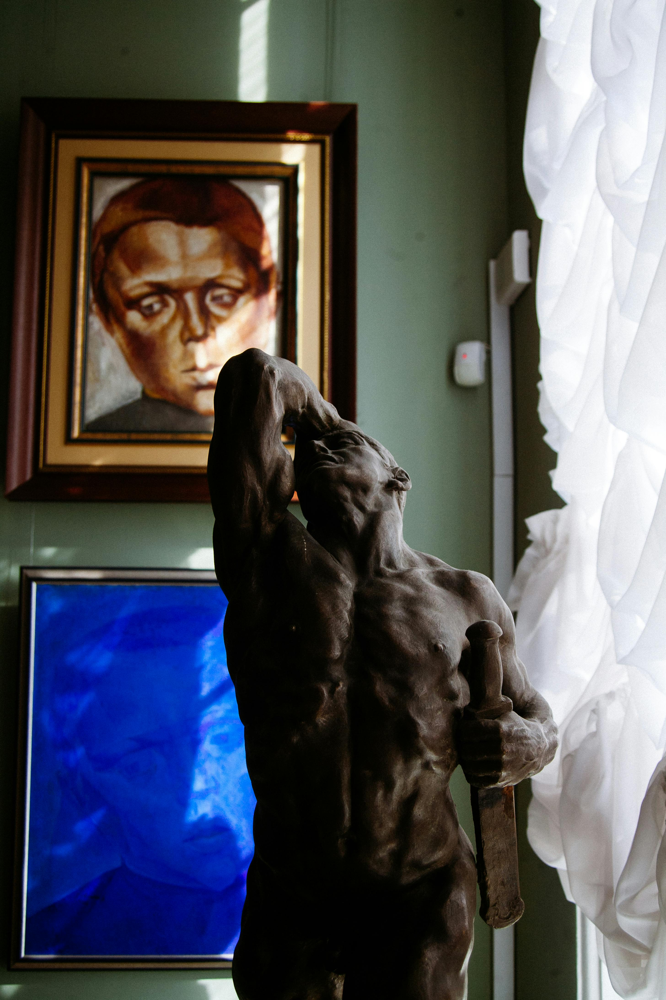
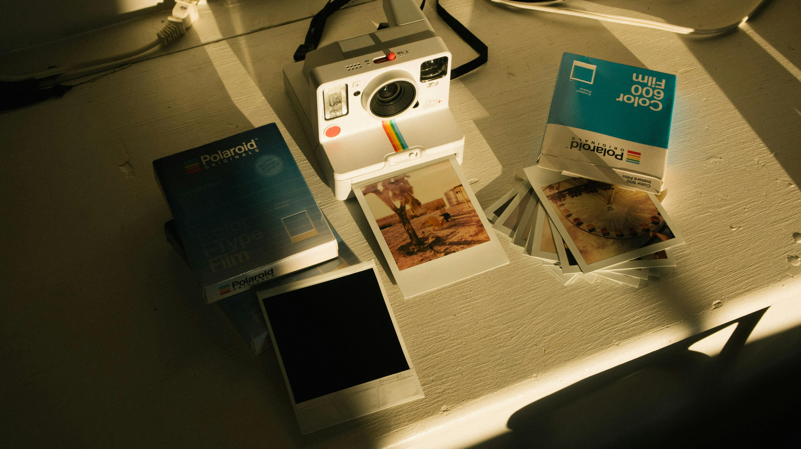
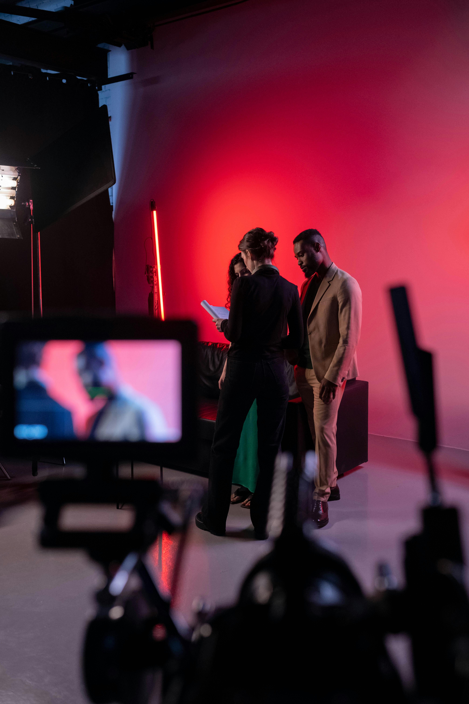
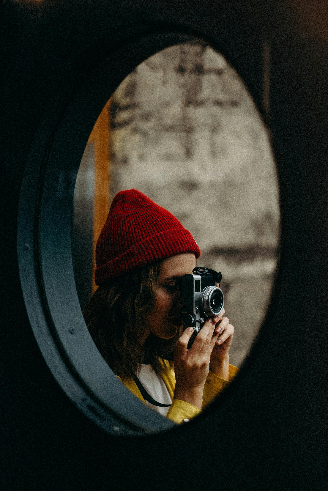
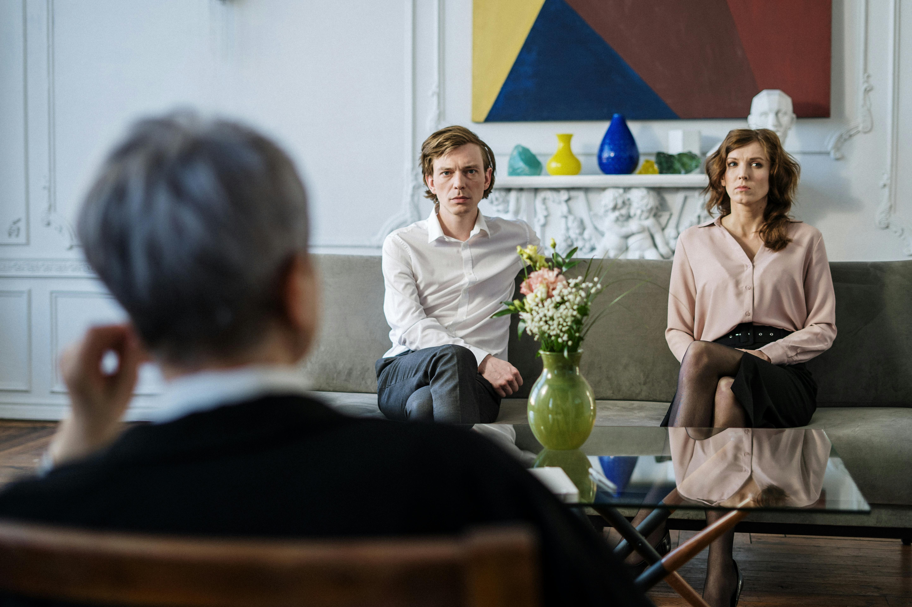
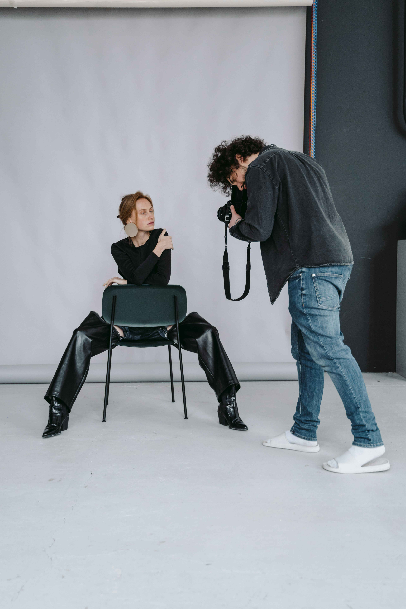

Unidad 3: Instalación multimedial

En esta unidad vas a trabajar la instalación multimedial como una forma de expresión artística propia del arte actual. Aquí no se trata solo de mirar una obra, sino de entrar en ella, recorrerla y sentirla. A través de la mezcla de imágenes, sonido, video, luz y objetos, crearás proyectos que comuniquen ideas, experiencias y reflexiones de una manera envolvente.
La instalación multimedial se piensa como un espacio que se vive. Quien observa deja de ser solo espectador y pasa a formar parte de la obra.
¿Qué siente al entrar? ¿Qué recuerda? ¿Qué preguntas se lleva al salir?
¿De qué trata esta unidad?

La unidad propone explorar cómo el arte contemporáneo construye experiencias usando distintos medios al mismo tiempo. Las instalaciones multimediales combinan recursos visuales, audiovisuales y sonoros para crear ambientes que invitan a detenerse, observar y reflexionar.
Aprenderás a comprender este tipo de obras y también a crear propuestas propias, donde cada elemento tenga un sentido y aporte a la experiencia completa
Instalación multimedial y arte contemporáneo

La instalación multimedial aparece como respuesta a los cambios tecnológicos y a nuevas formas de comunicación. Muchos artistas actuales usan este formato para hablar de temas sociales, culturales, emocionales o personales, apelando directamente a los sentidos.
En esta unidad analizarás cómo el espacio, el tiempo y la interacción influyen en el significado de una obra. No es lo mismo ver un video en una pantalla que entrar en una sala donde el sonido, la luz y las imágenes te rodean.
Lenguajes y medios de expresión

Durante la unidad trabajarás con distintos lenguajes y medios, como:
- Imágenes fijas y fotografía
- Video y proyecciones
- Sonido, música y ambientes sonoros
- Objetos, materiales y texturas
- Luz, color y uso del espacio
- Recursos digitales e interactivos
La combinación de estos elementos permite crear experiencias multimediales con identidad propia. Cada decisión comunica algo.
Desarrollo de proyectos multimediales

El centro de la unidad es la creación de un proyecto de instalación multimedial. Podrás trabajar de forma individual o en grupo, siguiendo un proceso que incluye observar el entorno, investigar, planificar, experimentar y montar la obra.
Se pondrá atención en la relación entre la idea, los medios elegidos y la experiencia que se quiere generar. No importa la cantidad de recursos, sino cómo se conectan entre sí y con el mensaje.
Experiencia, participación y sentido

Las instalaciones multimediales no solo se observan, se experimentan. En esta unidad reflexionarás sobre el rol del espectador y cómo su recorrido, sus decisiones y sus sensaciones influyen en la comprensión de la obra.
¿Dónde se camina? ¿Qué se escucha primero? ¿Qué provoca la luz o el silencio? Todo eso forma parte del significado.
Mirada crítica frente a lo multimedial

A lo largo de la unidad se trabajará el análisis de manifestaciones multimediales considerando su contexto, la intención de quien crea, los recursos técnicos y el mensaje que transmiten. También se reflexionará sobre su impacto cultural y social.
No siempre una obra dice algo de forma directa, y aprender a leer esas capas también es parte del proceso.
Aprendizajes Basales
Los Aprendizajes Basales corresponden a los objetivos fundamentales del nivel. Permiten analizar obras multimediales, integrar distintos lenguajes expresivos y crear proyectos con sentido comunicativo.
Aprendizajes Complementarios
Los Aprendizajes Complementarios profundizan lo trabajado en la unidad mediante el uso de tecnologías, herramientas digitales, trabajo colaborativo y la exploración de formatos propios del arte actual.
Aprendizajes Transversales (OAT)
Durante la unidad se integran aprendizajes vinculados a la convivencia, el bienestar, la salud mental y la formación ética. El trabajo multimedial promueve la colaboración, el respeto por las ideas de otros y la responsabilidad al crear experiencias compartidas.
Evaluación

La evaluación considera tanto el proceso como el resultado final. Se tendrá en cuenta la participación, la reflexión crítica, la integración de los distintos medios, la coherencia del proyecto y la claridad del mensaje y la experiencia propuesta.